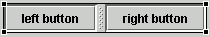

The visual editor has special behavior to make it easy to work
with a Swing JSplitPane container.
You can use the JSplitPane container to create two components with a split
bar between them. When the application is running, a user can drag the split
bar to adjust the space on the screen.
- When you first drop a JSplitPane container onto your design, the Design
view shows a representation of two components separated by a split bar. The
buttons are just visual representations for the two sides, where you can drop
your own components or containers:

- The first component that is dropped onto JSplitPane will occupy the left
pane. The second component that is dropped will occupy the right pane. If
both panes in the JSplitPane are already occupied, the visual editor does
not allow you to drop the component.
- The JSplitPane includes an orientation property. If you set the orientation
to VERTICAL_SPLIT, the split bar will run horizontally, making top and bottom
components. The default is HORIZONTAL_SPLIT.
- The visual editor generates code that uses a set method:
ivjJSplitPane.setTopComponent(getIvjJButton());
However, the visual editor will also recognize the following
code method:
ivjJSplitPane.addComponent(getIvjJButton(),"top");
- The visual editor will render JLayeredPane indexes in a single layer.
In the case of multilayer and indexes, the visual editor may not show the
components in the correct order.